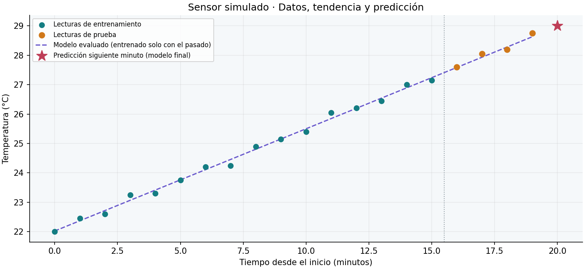

De lecturas imperfectas
a una predicción sencilla
Responsable del material: Wendy Mazariegos
Un sensor simulado registra temperaturas. Primero revisamos la calidad, después aprendemos una tendencia del historial y finalmente comprobamos el modelo con datos posteriores.
1. Datos originales y problemas de calidad
Se descartan datos vacíos o no numéricos, minutos inválidos, temperaturas fuera del rango didáctico de 0 a 50 °C y minutos duplicados. No se inventan valores para rellenar los huecos.
Ver las 25 filas y su diagnóstico
| Fila CSV | Minuto | Temperatura | Diagnóstico |
|---|---|---|---|
| 2 | 0 | 22.0 | válida |
| 3 | 1 | 22.45 | válida |
| 4 | 2 | 22.6 | válida |
| 5 | 3 | 23.25 | válida |
| 6 | 4 | 23.3 | válida |
| 7 | 5 | 23.75 | válida |
| 8 | 5 | 23.75 | minuto duplicado |
| 9 | 6 | 24.2 | válida |
| 10 | 7 | 24.25 | válida |
| 11 | 8 | 24.9 | válida |
| 12 | 9 | 25.15 | válida |
| 13 | 8.5 | dato vacío o no numérico | |
| 14 | 10 | 25.4 | válida |
| 15 | 11 | 26.05 | válida |
| 16 | 12 | 26.2 | válida |
| 17 | 11.5 | error | dato vacío o no numérico |
| 18 | 13 | 26.45 | válida |
| 19 | 14 | 27.0 | válida |
| 20 | 15 | 27.15 | válida |
| 21 | 14.5 | 85 | fuera del rango del laboratorio (0–50 °C) |
| 22 | 16 | 27.6 | válida |
| 23 | 17 | 28.05 | válida |
| 24 | 18 | 28.2 | válida |
| 25 | sin_dato | 25 | dato vacío o no numérico |
| 26 | 19 | 28.75 | válida |
2. Tendencia y separación temporal
Las primeras 16 lecturas entrenan el modelo; las últimas 4 lo ponen a prueba. La línea aprende una relación entre minuto y temperatura, sin utilizar las lecturas de prueba para ajustar sus parámetros.

Pendiente aprendida en entrenamiento: 0.347 °C por minuto. Esta serie muestra una tendencia ascendente; no demuestra la causa del calentamiento.
3. Resultado del modelo
Error absoluto medio (MAE) de la regresión: 0.084 °C.
MAE de repetir la última lectura de entrenamiento: 1.000 °C. Un error menor indica un mejor ajuste en estas lecturas de prueba.
| Minuto de prueba | Valor observado (°C) | Predicción (°C) | Error absoluto (°C) |
|---|---|---|---|
| 16 | 27.60 | 27.59 | 0.02 |
| 17 | 28.05 | 27.93 | 0.12 |
| 18 | 28.20 | 28.28 | 0.08 |
| 19 | 28.75 | 28.63 | 0.12 |
4. Una predicción nueva
Tras evaluar, ajustamos un modelo final con las 20 lecturas válidas para estimar el siguiente minuto.
Es una estimación, no una medición. Su error aún no puede calcularse porque no tenemos una lectura observada de ese minuto. El MAE anterior corresponde al modelo evaluado, no a esta predicción futura.
Datos sintéticos para clase: el ejemplo no asegura precisión con sensores reales ni tendencias que cambien. Una sola división temporal ofrece evidencia limitada; no extrapoles esta recta a períodos largos.